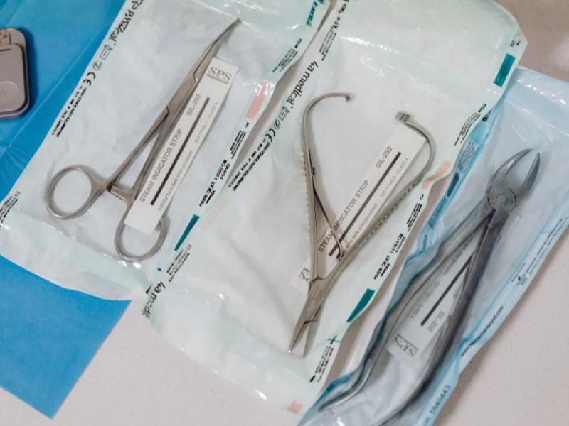

Dr. Batra's Dentistree
We use completely sterile instruments and materials on our patients. The disposable instruments that are to be used in patient's mouth are immediately disposed off after each use.
And the non-disposable instruments pass through a series of disinfection procedure before use in the next patient. During treatment, our doctors follow strict protocols of infection control, using disposable mask, caps, gloves during each patient.
Thus, we follow strict sterilization protocols and see to it that our patients get the best of treatment with best environment and hygienic surroundings.

Every non-disposable instrument undergoes a rigorous 4-stage disinfection process before it touches any patient.
The instruments are scrubbed with spirit swabs to remove visible debris and initial contamination.
Instruments are placed in Snell Surgizyme 10% solution to remove all debris and cleaned in ultrasonic cleaner.
After drying, instruments are sealed in disposable wraps and autoclaved at high temperature and pressure.
The autoclaved instrument packets are then stored in ultraviolet chamber till use to maintain sterility.
During treatment, our doctors follow strict protocols of infection control — using disposable masks, caps, and gloves during each patient interaction.
Fresh mask for every patient
Hygienic head protection
Changed per patient
All surfaces sanitized
We are enrolled with Quantum Biomedical Waste Management, thereby maintaining an eco-friendly environment. All biomedical waste is handled and disposed through certified channels following government regulations.
Experience world-class dental care in the safest, most hygienic environment. Book your appointment today.